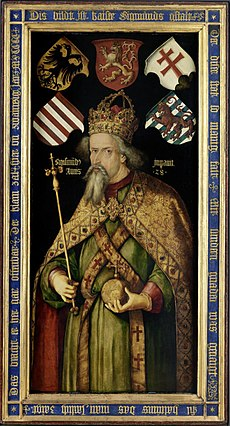

Külpolitikája
Törökök ellen
- 389 júniusában a rigómezei csata következtében Szerbia I. Bajazid vazallus államává vált. Zsigmond és bárói az első pillanatban felismerték a veszélyt, és a király belső gondjai ellenére 1389 és 1392 között minden évben hadjáratokat vezetett a Balkánra.
- Zsigmond első balkáni hadjárata 1389-ben elfoglalta a mai Kragujevac környékén Borač és Čestin várát. Ez volt az első olyan eset, amikor magyar király a macsói bánság határán túl fekvő szerb területet vett birtokba. Ezután a törökök és a szerbek együttes erővel először 1390 elején törtek be Magyarországra. 1390 júliusában Sárói László temesi ispán Vitovnicánál szétvert egy újabb, betörni készülő török-szerb csapatot.
- Zsigmond második balkáni hadjárata 1390-ben semmilyen értékelhető sikert nem hozott (valószínű célja Ostrovica elfoglalása lehetett). A törökök ezenközben elfoglalták Galambóc kulcsfontosságú várát. A várat Zsigmond még az év decemberében megpróbálta visszavenni, de sikertelenül.
- 1391-ben meghalt I. Tvrtko bosnyák király, és Zsigmond hadjáratot hirdetett Boszniába, de végül inkább (valószínűleg) fegyverszünetet kötött Dabišával, az új királlyal, és kisebb haddal a Szerémségbe betört és az azt végigpusztító szerb–török csapatok ellen indult. (A sereg másik fele Perényi Miklós szörényi bán vezetésével a Temesközben harcolt – sikeresen – az oda is betörő törökök ellen). A törökök elpusztították Szávaszentdemetert, Nagyolaszt és Nagyenget.
- Zsigmond harmadik balkáni hadjárata. A magyarok Nagyolasznál, majd (immár Zsigmond vezetésével) Nagyengnél fölvették velük a harcot, de még a második ütközet is csak döntetlennek minősíthető eredménnyel zárult. A nagyengi csatában kitüntette magát az ennek hatására egyre nagyobb szerephez jutó Maróti János, akinek öccsét, Maróti Dénest előzőleg (Nagyolasznál) elfogták a törökök.
- 1392 elején a törökök minden korábbinál nagyobb erővel törtek be a temesi végeken, és Zsigmond még bátyjától, Venceltől is segítséget kért (és kapott) Zsigmond a negyedik balkáni hadjáratra (sőt, még angol lovagok is jöttek sógorától, II. Richárd angol királytól, aki Zsigmond édesnővérének, Luxemburgi Anna cseh királyi hercegnőnek volt a férje). Ennek hatására a török hadak (amiket maga I. Bajazid szultán vezetett) nem bocsátkoztak nyílt ütközetbe, csak gátolták, késleltették a magyar hadak mozgását, amíg azok utánpótlásuk apadtán vissza nem fordultak.
- Zsigmond ötödik balkáni hadjárata 1395-ben. Zsigmond ismét személyesen vezette a hadat, ezúttal Havasalföldre. Legyőzte a törökbarát Vlad vajda csapatait, visszasegítette trónjára az 1394-ben elűzött Mircsa vajdát. A magyar hadak a Dunáig jutottak, ahol visszavették a törököktől Kis-Nikápolyt (bolgárul Holovnik, románul Turnu Magurele). Miután elvonult a magyar sereg, a törökök betörtek Krassó és Temes megyékbe, de Csáky Antal és Marcali Miklós temesi ispánok Csák mellett legyőzték őket.
- A sikeren felbuzdult Zsigmond ki akarta űzni a törököt egész Európából, de 1396-ban Nikápolynál döntő vereséget szenvedett. Ezután már csak a védekezésre összpontosított, és a telekkatonaságot létrehozva átszervezte a magyar haderőt. Ezzel új adót vezetett be: húsz jobbágytelek után egy (lovas)íjászt kellett kiállítania minden nemesnek. Ezen felül a király „ideiglenesen”, a török veszély megszűntéig felfüggesztette a nemesség hadi szolgálatának idejét szabályozó törvényt. Ez utóbbi rendelkezését később I. Albert az országgyűlés kívánságára eltörölte.Zsigmondot a telekkatonaság bevezetése ellenére sorra érték a kudarcok a törökök ellen, ezért a déli vidéken tagolt védelmi rendszert épített ki. Ennek legdélebbi részei az ütközőállamok voltak (például Havasalföld). Ez után következtek a déli határ mentén kialakított bánságok, s a harmadik vonalat az első végvárvonal adta, melynek központja Nándorfehérvár lett. 1428-ban sikertelenül próbálta meg visszafoglalni a törököktől Galambóc várát. A déli irányú küzdelmek alatt elveszítette Dalmáciát, ami ismét velencei fennhatóság alá került.

Zsigmond király Albrecht Dürer festményén (1509 körül)
Német Királyi Cím
- Zsigmondot 1410-ben német királlyá választották . Erre Rupert király 1410-ben bekövetkezett halála adott alkalmat, akit a választófejedelmek 1400-ban a letett Vencel, Zsigmond bátyja helyére választottak meg. Akkor a cím kikerült a Luxemburgiak birtokából. A választás alkalmával Vencel, mint cseh király, a kölni érsek, a mainzi érsek, a szász választó, illetve Zsigmond unokatestvére, Jodok morva őrgróf, Brandenburg tényleges és jogszerű ura Jodokot támogatták. Zsigmond mellett csak a trieri érsek és rajnai palotagróf (Rupert fia) állottak. 1410. szeptember 20-án, amikor még csak négy választófejedelem volt a helyszínen, Zsigmond puccsszerűen saját magát nyilvánította német királlyá. A brandenburgi választó szavazatát ő adta le saját magára. A brandenburgi tartományt azonban 1388-ban elzálogosította Jodoknak azzal a kitétellel, hogy ha öt éven belül nem váltja vissza, akkor az a szavazattal együtt végleg Jodokot illeti. 1397-ben ezen jogában Vencel, még mint német király, meg is erősítette Jodokot.
- OKtóber 1-én a választók többsége Jodokot választotta királlyá. A választás résztvevői érvénytelennek tartották Zsigmond címét, azt azonban nem akadályozhatták meg, hogy a címet mindenféle hatalom nélkül használja — a tényleges hatalom megszerzésére kísérletet sem tett, mintha beérte volna a látszattal. A helyzetet végül az oldotta meg, hogy Jodok 1411. január 18-án váratlanul meghalt. Némi diplomáciai huzavona után - elsősorban a mainzi érsek ellenállását kellett legyűrni - a négy választófejedelem - miután a trieri és pfalzi választó elutasította, hogy új választásba belemenjenek - Frankfurtban 1411. július 21-én Zsigmondot elismerték német királynak.[2]
|